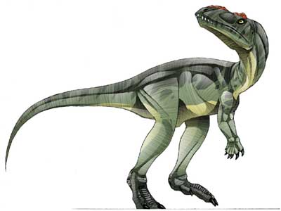

DInoLand
Edito
Bienvenue sur ce site qui parlera de dinosaures ! Vous avez ci-dessous une description de certains d'entre eux, parce qu'on est tous fans de dino (ou pas) et qu'ils tuent sa maman à la mort
Pour ceux qui voulaient voir Denver, c'est raté... Néanmoins, je vous invite à le chercher sur dpstream *-*
Scrat !!

Scrat est un écureuil de fiction qui apparaît dans le film L'Âge de glace, sorti en 2002, ainsi que ses suites L'Âge de glace 2 et L'Âge de glace 3. Scrat est également apparu dans plusieurs courts-métrages qui lui sont dédiés.
Il est très connu pour être obsédé par un gland, mettant constamment sa vie en danger pour l’attraper. Le fait qu’il n'arrive jamais à ses fins et l’importance que semble mettre le Destin à l’empêcher d’atteindre son but en fait presque l’allégorie de la malchance et de la persévérance.
Source : Lire la suite ...
Erectopus !

Erectopus est un théropode (comparable à l'allosaure) du début du Crétacé qui vivait dans ce qui sera plus tard l'est de la France. Les fossiles ont été découverts à la fin du XIXe siècle dans le gisement de phosphate de La Penthèive à Louppy-le-Château où furent également découverts des restes de plésiosaures, ichthyosaures et crocodiles.
En 1882, les ossements, qui se trouvaient dans la collection privée de Louis Pierson, ont été décrits par H. E. Sauvage qui les classa dans le taxon Megalosaurus superbus. En 1932, Friedrich von Huene (1875-1969), démontra qu'ils n'appartenaient pas au genre Megalosaurus et les plaça dans un nouveau taxon, Erectopus sauvagei.
Après la dispersion de la collection de Pierson, les fossiles disparurent pour réapparaitre à la fin du XXe siècle au Muséum national d'histoire naturelle de Paris et dans des collections privées. Ils furent placés par Allain (2005, p. 83) comme Erectopus superbus dans la famille des Allosaures et l'espèce fut décrite comme étant un carnosaure. C'est le 3e plus jeune carnosaure européen connu en Europe au début du Crétacé avec le "théropode de Montmirat" (Valangian) du sud de la France et le Neovenator salerii (barrémien) de l'île de Wight.
Source : Wikipédia
Article 3 !! Le Eoraptor
Eoraptor lunensis a été découvert en 1991 en Argentine par Ricardo Martinez dans la vallée de la Lune, et décrit en 1993 dans Nature. Long de 1 m, haut de 40 cm, son poids ne devait pas dépasser 10 kg. L'Eoraptor a été classé dans le sous-ordre des théropodes, qui regroupe d'autres dinosaures carnivores. Il était digitigrade, ses membres antérieurs mesuraient la moitié de ses pattes, et ses mains possédaient chacune cinq doigts. Les trois plus longs étaient terminées par de larges griffes dont il se servait pour maintenir sa proie et attraper des végétaux. On suppose qu'il se nourrissait de petits animaux, de feuilles tendres et de fruits, sur lesquels il bondissait rapidement ou cueillait.
Source : http://fr.wikipedia.org/wiki/Eoraptor
Wims Kevin
Article 4 : Le Diplodocus
Le Diplodocus est un genre de dinosaure sauropode diplodocidé herbivore dont les premiers fossiles ont été découverts en 1877 par Samuel Wendell Williston. Le nom générique, inventé par Othniel Charles Marsh en 1878, est un néologisme latin dérivé du grec διπλόος (diploos) « double » et δοκός (dokos) « faisceau », en raison de la présence d'os appelés chevrons et formant une longue bande osseuse dans la partie inférieure de la queue. On croyait initialement que ces os étaient caractéristiques des Diplodocus, mais ils ont été découverts depuis chez d'autres genres de la famille et chez des sauropodes non-diplodocidés comme Mamenchisaurus. Il vivait dans ce qui est maintenant l'Ouest de l'Amérique du Nord à la fin du Jurassique. C'est l'un des fossiles de dinosaures les plus communs dans la Formation supérieure de Morrison, une couche de sédiments marins peu profonds et alluviaux déposés il y a environ 150 à 147 millions d'années, dans ce qu'on appelle aujourd'hui les étages Kimméridgien et Tithonien. La formation de Morrison correspond à un environnement et une époque dominée par de gigantesques dinosaures sauropodes, tels que Camarasaurus, Barosaurus, Apatosaurus et Brachiosaurus. Diplodocus figure parmi les dinosaures les plus facilement identifiables, avec sa forme de dinosaure classique, son long cou et sa longue queue et ses quatre pattes robustes. Pendant de nombreuses années, il a été le plus long dinosaure connu. Sa grande taille peut avoir été un système de dissuasion contre les attaques de prédateurs comme Allosaurus et Ceratosaurus : leurs restes ont été trouvés dans la même strate, ce qui suggère qu'ils ont coexisté avec les Diplodocus.
Source : http://fr.wikipedia.org/wiki/Diplodocus
Triceratops
Triceratops a été découvert par John Bell Hatcher en 1886. À la fin du XXe siècle, on avait retrouvé une cinquantaine de crânes en Amérique du Nord, plusieurs ossements mais aucun squelette complet. Cet animal vivait probablement en troupeaux, dans des plaines et des forêts qui bénéficiaient d’un climat assez doux. Avec sa tête basse, il broutait des plantes herbacées, des fougères et pouvait plier les branches avec ses cornes pour attraper les feuilles qu’il mastiquait avec ses dents jugales. Son bec en os était dépourvu de dents. Le tricératops se distingue par son large crâne, l'un des plus grands parmi les animaux terrestres puisqu'il pouvait atteindre 2 mètres de long, soit presque le tiers de l'animal. Selon Jack Horner, la vascularisation de la collerette pourrait s'expliquer par la présence d'une couche de kératine recouvrant la collerette (comme on l'observe sur la griffe du paresseux)5. Des fossiles des tricératops d'âges divers ont montré que les cornes changeaient d'orientation avec l'âge : Pointant vers l'arrière chez les jeunes, elles s'orientent vers l'avant à l'âge adulte. De même, les ornements triangulaires présents sur la collerette des jeunes s'aplatissent avec l'âge
Source : Wikipédia
Histoire de Trex ...
Tyrannosaurus, ou tyrannosaure, est un genre de dinosaure théropode appartenant au clade des Tyrannosauridae et ayant vécu à l'extrême fin du Crétacé (Campanien et Maastrichtien, il y a environ 70 à 65 millions d'années) dans ce qui est actuellement l'Amérique du Nord. Tyrannosaurus rex, souvent abrégé en « T. rex » et dont l'étymologie du nom signifie « roi des lézards tyrans », est l'une des plus célèbres espèces de dinosaure et l'unique espèce de Tyrannosaurus si le taxon Tarbosaurus bataar n'est pas considéré comme une espèce de Tyrannosaurus. Ce dernier fut l'un des derniers dinosaures non-aviens à avoir vécu jusqu'à l'extinction survenue à la limite Crétacé-Paléocène il y a 65 millions d'années.
Source : blabla
Velociraptor
Le vélociraptor (« prédateur rapide », nom scientifique Velociraptor) est un genre de petit dinosaure bipède carnivore qui a vécu à la fin du Crétacé, entre 80 et 70 millions d'années avant notre ère.
Le vélociraptor appartient à la famille des Dromaeosauridae, dont les autres représentants (Deinonychus, Dromaeosaurus) sont parfois également appelés « raptors ». Ils sont rattachés aux cœlurosauriens, une superfamille incluse dans les théropodes, qui regroupe nombre d'autres dinosaures carnivores.